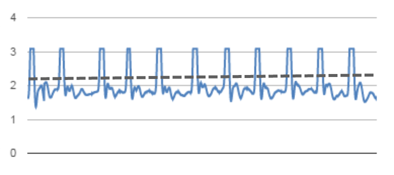
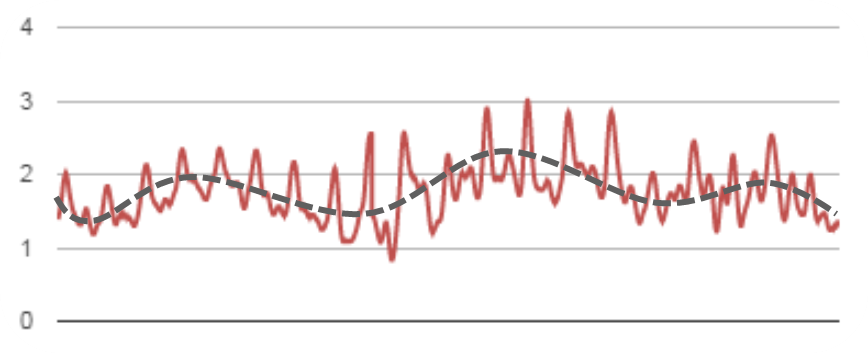

Technology: How it works
Aromatherapy
"Some experts believe our sense of smell may play a role. The "smell" receptors in your nose communicate with parts of your brain (the amygdala and hippocampus) that serve as storehouses for emotions and memories. When you breathe in essential oil molecules, researchers believe they stimulate these parts of your brain and influence physical, emotional, and mental health. For example, scientists believe lavender stimulates the activity of brain cells in the amygdala similar to the way some sedative medications work. Other researchers think that molecules from essential oils may interact in the blood with hormones or enzymes." - University of Maryland Medical Center
Stress/Anxiety Detection Technology
Aroama uses your heartbeat to detect stress.
“Heart rate variability is one of the most robust, noninvasive measures of stress response” - McDuff, Affectiva Researcher
Heartbeat sensing: When the heart beats, capillaries expand and contract. A sensor on your wrist can detect the signal of your heartbeat by shining a light and measuring how much of that light is reflected back. Here you can clearly see the difference between calm and stressed heart signals.
Calm
Anxious
Scent Diffusion Technology
The aroma pods contain a small sponge soaked in essential oils. The sponge sit on a small vibration motor. When activated, the vibrations release the scent of the oils into the air without any visible mist. It functions a lot like a miniature humidifier.
Data and Machine Learning Technology
Every time aroama is used, the place and time that you experienced anxiety is recorded. When this anonymized data is collected across a large population over time, it can be used to see when/where the population tends to experience stress. This is valuable information that can be used to improve larger systems. On a smaller scale however, each user's device gets to know their preferences and over time can adjust parameters to get the most accurate stress detection readings for that individual.